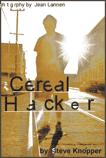
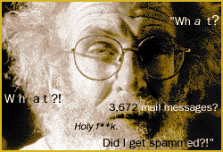

"What?" John Draper whispers, with panic and awe in his voice. He leans forward and stares into his Macintosh PowerBook 520. "What?"
A gray-haired baby boomer who's making photocopies glances over at Draper, a wild-eyed man with one front tooth and a scraggly beard. Draper, oblivious to everything except his computer screen, begins to shout: "3,672 mail messages? Holy f**k. Did I get spammed?"
This Kinko's Copies in Mill Valley, Calif. doubles as Draper's office space. Everyday, he plops his scratched-up laptop onto the gray desk next to the free Kinko's phone, hitches the wire to his computer jack and logs onto the Internet. He usually spends a few hours checking e-mail and tinkering with his Web page.
But today, a terrible thing has happened.
"Oh, look at that!" he says loudly, ignoring the steady flow of Kinko's customers. "They've subscribed me to all these mailing lists." The Internet mocks him. His fast and shaking fingers flail over the keyboard, but the names of his new mailing lists are flying by faster than he can press the delete key. "Welcome to dc-stuff" ..."Welcome to drewids-news" ..."Welcome to compost"... "Welcome to scream"... "Welcome to barry-manilow." Draper is totally helpless this summer morning. "This is going to take forever," he says.
The Kinko's customers are now studiously trying to ignore the homeless man's persistent outbursts. They don't know he's a living legend, and certainly, Draper, 53, doesn't carry himself as though he were one. In the early '70s, Draper earned the nickname "Cap'n Crunch" after discovering that a plastic whistle, packaged in a cereal box, was capable of blowing perfect 2,600-Hz tones. Blowing that same whistle into a phone receiver, a caller could make unlimited free phone calls around the block or around the world.
Back at Kinko's, Draper repeatedly calls his system operator for help, his voice occasionally devolving into a shaky whine, and frantically tries to delete the offending e-mails. This attack, he says, will cripple his attempts to find a job through the Internet.
Hackers have declared war on John Draper. He's not sure why, but since he put up his Web page last October (http:www.well.com/user/crunch/), he's begun receiving a steady flow of flames. "One said, 'You're just a has-been living in the past, you don't deserve to be a hacker,'" recounts Draper, who has tried to communicate with some of the e-mailers. The attacks have moved beyond being playful--some are even vicious and destructive. Draper says hackers have intercepted some of his messages to prospective employers and then encouraged them not to hire him. He says hackers have also intercepted private correspondence to his attorney and used it for further ridicule. It's the hacker equivalent of smacking your crotchety grandfather upside the head with a newspaper just to hear him yelp.
At Kinko's, wearing a pink Target T-shirt, blue jeans cut off under the knee, socks and tennis shoes, Draper vows revenge. He leaves a voice message for a man he thinks is an FBI agent. He tries to alert Internet security services. When the busy system operator begins screening calls, Draper leaves a half-dozen phone messages. He is outraged and defensive, which is understandable. He is battling an enemy he can't see; worse, he can't figure out why he's even under attack. "So what if I'm a has-been?" he asks. "So what if I'm talking about all the things I've done in the past?"
In 1976 Draper spent four months in a federal prison for wire fraud. He's certain the Feds are watching him, so he stays away from illegal phone calls; going so far as to include a link on his own Web page to a page listing good legal deals from legitimate phone companies. Another prison term, he says, could put him away for 10 or 15 years: "By then, I'll be 65 or 70 years old. I want to live my life!"
Five days later an anonymous message appears in the Usenet newsgroup news.admin.net_abuse. misc. "Johnny," a Colorado hacker in his early 20s, claims responsibility for the "mail bomb" against Draper--and similar attacks on journalists, the White House, Rush Limbaugh, MTV executives and another famous elder hacker, Emmanuel Goldstein. In the lengthy message, Johnny writes this about Cap'n Crunch: "You are nothing. You haven't been anything for a long time. Quit this pretense of you knowing something about current phone systems."
Johnny calls a couple of nights after the attack to do a telephone interview. He's devilishly proud of his attack on the system and listens patiently to an account of Draper's defense of himself. Johnny isn't fazed. Draper, he says, has committed an indescribable sin by contacting the FBI. Worse yet, in the eyes of working hackers everywhere, he continues to take credit for stuff he hasn't done in decades. "He's gone out of his way to mail quite a few hackers, saying they're either stupid, lame or he's going to sue them or narc them out to the FBI," Johnny says. "That's not exactly in keeping with the hacker ethic." By way of response, Draper says that the Secret Service is after Johnny for spamming the White House and that he had better watch out.
|
|
|
|
The 1992 action movie Sneakers opens with two teenagers in 1969
using a college campus computer and telephone to mischievously arrange a
$25,000 Republican Party donation to the Black Panthers. The Police show up and
capture one of the two hackers, the frightened and nerdy Cosmo. In the film, Cosmo
turns up years later as a bad guy bent on world domination. The adult Cosmo,
played by sophisticated Gandhi actor Ben Kingsley, wears impeccable suits
and slicks back his hair into a distinguished pony tail. Even his accent sounds cool.
The screenwriters modeled young Cosmo loosely after the young Draper--there's a
clue early in the movie, when the other teen hacker, Robert Redford's character,
briefly spells "CRUNCH" during a Scrabble game. In real life, however, Cap'n Crunch
looks nothing like the vogue Kingsley character. Draper is homeless and smells as
though he hasn't showered in days. He becomes obsessed and adamant about
trivial things. At a Mill Valley sandwich shop, he asks a Hispanic busboy whether or
not the restaurant payphone accepts incoming calls. The busboy looks confused,
and Draper quickly snaps, "Do you speak English?" The busboy does, but he was
momentarily stunned by Draper's random question about the phones.
Draper resembles the familiar caricature of God, with flowing beard and wavy gray
hair--only it's standing on end, energized, as though his finger has been stuck in an
outlet.
He's still a hippie, taking road trips in recent years to the Rainbow Family
Gathering in Missouri, San Diego, Texas, Australia and Russia. He still regrets
ignoring a sign to the original Woodstock, which he disregarded because he hadn't
heard of the scheduled bands.
In 1990, Draper was diagnosed with a degenerative lumbar disc in his back. He
spent two years working with a chiropractor and a personal trainer and gradually
healed. Today, he performs yoga and tai chi, working out regularly at a local health
club and volunteering to give friends and strangers "energy work" or backrubs. He
dances all night at Bay Area rave parties at least three times a week. He talks
proudly about his stamina and how younger people can't keep up with him. But the
shiniest sparkle in his constantly dilated blue eyes comes when he's telling hacker
war stories.
The stories made him famous. Every now and then a magazine will recall his past
glory and stick him in a hacker article. Newsweek once ranked him among
the top 20 hackers of all time. Earlier this year, Forbes ASAP called him
"Cap'n Crunch, King of the Phreakers," and the PacificSun, a North Bay
alternative weekly, credited Crunch with being the little guy who outsmarted the big
companies en route to becoming a "hippie legend." After Sneakers was
released, CBS' This Morning put him on the air ("My story is a lot more
complex and interesting," he told the show). And to interview Draper, Art Bell, a
nationally syndicated radio talk-show host, crouched on a foam mattress beside the
phreaker legend inside a campground restroom. His "Crunchman" Web page proudly
and painstakingly preserves his fascinating tales.
"You know," he says, "all this publicity and I still haven't been able to find a job."
On his Web page, he complains: "With all the fame I've accumulated, I've never
accumulated one red cent for all the hassles I've endured in all of this 25-year
story."

Draper's 25-year story actually began in Alaska when he was an Airman Second
Class with the U.S. Air Force. He was stationed in a deserted post with 60 or 70
other men in the middle of frigid nowhere, marooned from women and civilization.
He had to come up with something to pass the time, so he built a ham radio and
became a sort of underground military DJ. He also started messing with the phones,
using loopholes in the Air Force and Alaskan switchboard to make free calls home.
After his honorable discharge, he called the base, spliced his voice into the public
address system and publicly told the commander where he could go.
Later, while working as a National Semiconductor engineer, a blind kid named
Dennie called Crunch, at random, to test some phone tricks. Dennie told Draper he
was a "phreak"--a slang term that mixes the words "frequency," "phone," "freak"
and "free"--and knew 200 different methods of making free long-distance calls.
Draper was intrigued. He met with Dennie one day and followed him to a dark room
where he was introduced to two other blind phreakers. They showed Draper how to
pick up a "trunk," or an open phone line, and use a musical organ to shoot tones
into the receiver. Draper showed Dennie a few technical things he'd learned, and
the two became friends.
Upon returning home that day, Draper shoved his brother off the family piano so
he could successfully record the right tones. Shouting, "It works!" he rushed back
and forth between his room and the piano. "I was bouncing off the walls. My dad
was just sort of shaking his head like, 'What have I raised, here?'"
The blind kids requested that Draper build a "blue box" to mechanically create
these tones and shoot them into the phones; this box was more portable and
efficient than an organ, whistle
or piano. Draper did just this and often took long blue-boxing trips in his Volkswagen
van, calling surprised friends for free all over the country. Blue-boxing became the
cornerstone of phreaking--with today's more sophisticated technology, slightly
modified phone dialers called red boxes are used instead.
Draper owns up to a slight correction of his myth--the blind kids, he says, told
him about the Cap'n Crunch whistle. He used it only after their recommendation.
A strange underground fame, however, got attached to his name. Stories about
Draper and his phreak friends calling the White House, reaching President Nixon
personally, telling him about a crisis-level shortage of toilet paper, giggling and
hanging up, circulated around the country back in the '70s. People started seeking
out Draper's advice on phreaking and hacking. A college student named Steve
Wozniak contacted him for a blue-box lesson. Draper obliged, and Wozniak
contacted the Pope and called a payphone at London's Grand Central Station.
Crunch tried to teach Wozniak never to sell the equipment because he'd get in
trouble, but Wozniak did anyway, using the cash to put himself through college and
build his first computer. Wozniak went on to co-found Apple Computer. Today, both
friends have reciprocal links on their Web pages.
In 1971, writer Ron Rosenbaum, who had interviewed many phreaks in the
growing worldwide network, called Draper for an Esquire magazine story.
Draper was suspicious, but agreed to it anyway. Despite a few errors--Draper's Web
page carefully lists each inaccuracy--Rosenbaum's piece was thorough, and
shocked a technologically unsavvy America with tales of snot-nosed kids outwitting
Ma Bell. A few months later, the indictments and investigations began. Draper's
peaceful phreak existence soon came crashing down around him. On day after
finishing a computer class at college, he stopped by a 7-11 before heading home.
Four FBI agents jumped out and grabbed him in the parking lot. Draper was put on
five years probation for wire fraud.
Four years later he was convicted of the same crime and spent four months in
California's Lompoc Federal Prison. He taught phone-phreak classes to prisoners to
avoid being labeled uncooperative or as a snitch. "It was almost like a Boy Scout
camp," he says. "I worked in the pig farm. I got kicked out because I kept putting
judges' names on the pigs. They didn't like that too much."
After his release from prison, Draper began to drift. He wrote EasyWriter, a
pioneering word-processing program, for an impressed Wozniak in the mid-'80s. He
used his expertise to nail down a few good jobs. In 1984, a former hacker hired
Draper to work for his at a software writing company. Over the three years he
worked there, Draper says he began irritating his cigar-smoking supervisor (who he
demanded not smoke in the office). When the former hacker that hired him left the
company, so did Draper's protection. He was fired by the smoker. Since then,
despite another year-long programming job that provided him with some savings
and a trusty PowerBook, he has had little professional success. For a while, Draper
lived in a beautiful hunting lodge, but then the money ran out. He now sleeps at a
campground.
Draper admits, however, that he now feels freer than ever before.
|
|
|
|
Four hours later and the King of Phreakers is still freaking out in the middle of
Kinko's. He hadn't counted on this crisis. He has a busy day planned. He has to
meet his friend Symonty, an Australian computer programmer with fluorescent green
hair, in downtown San Francisco later in the evening. Symonty was among the
many, who after meeting Draper at a rave a few nights back, was astounded by his
bottomless energy.
And, of course, Draper says he has to spend at least a few hours in the lazy
afternoon sun, bumming around Mill Valley's red-bricked Town Square.
Draper finally switches his address to an unlisted account and gives up. He leaves
the heavy deleting for the system administrator (his e-mail file has grown to 30
megabytes). His ranting finally slows to a hacking critique: "We might leave a note
saying, ÎKilroy was here,' but that's about it. But we never would have done anything
like this mail spamming thing. (Hackers) are more damaging today than they were
before. They have no remorse."
At the Square, Draper immediately spots Don Fricault, a Larkspur software
designer who likes to watch the babes emerge from Mill Valley's fancy restaurants
and upscale coffee shops. Draper walks right up to him and asks his friend if he
knows how to solve his e-mail problems. Fricault makes a couple of suggestions,
but Draper methodically shoots them down. Fricault finally gives up, and Draper
walks away to speak with other friends.
Fricault met Draper a few years ago, and they briefly worked together designing
Web pages for the Marin Cyber Group. Fricault had always known who Draper was--
in college, he says, "We had him up as a hero. Those were rebellious times and
everything."
Today, Fricault says, Draper is "more like a character. His technical expertise has
probably leveled off somewhat. He's got a commanding nature, and sometimes you
have to back him off. But he's harmless, totally harmless. As soon as he heard
about the Web, he put up his Web site. He likes to be the star." Fricault surveys the
Square, pointing out the bare-chested men playing chess, and then returns to his
thoughts about Draper. "There's so many characters here," he says. "It's like a TV
show."
Draper returns. "Guess what?" he asks Fricault. "Power is out in all the Western
states."
"It's probably the same guys who were spamming you," Fricault suggests. But
Draper doesn't hear it. His pager has gone off and he's wandering back to spend
more time with his most loyal friends--the phones.
|
|